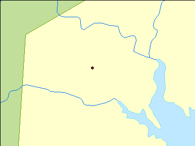
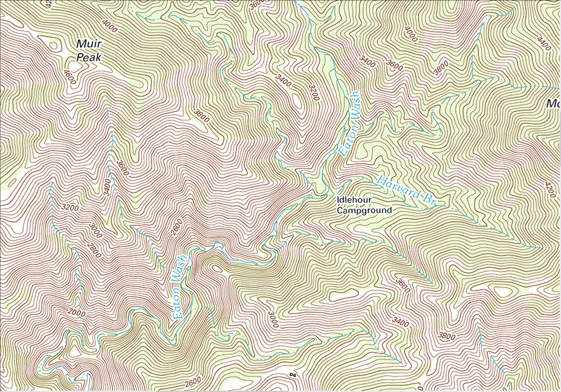

GIS Lessons
Vectors vs. Rasters
Evan Lue, PhD
©2015
GIS Data Models
A data model is “a mathematical construct for representing geographic objects or surfaces as data.”
from the GIS Dictionary by Esri
Vectors and rasters are the 2 most common of the 3 GIS data models.
First Glance
Vector
Made up of vertices
Raster
Values in a grid
Vectors: Points, Lines, and Polygons
Points are also known as vertices or coordinates pairs
Lines and polygons are made of connected vertices
Lines
Polygons
Rasters: Grid Spacing and Pixel Sizes
Coarser scale (100m)
Finer scale (50m)
Photos Are Rasters!
Vector file types:
- Shapefile (.shp)
- Scalable Vector Graphics (.svg)
Raster file types:
- JPG
- GIF
- PNG
- TIFF
Areal Coverage
e.g. 2 Vectors
Discrete Coverage

Exceptions: polygons can have "full coverage" of an area
e.g. 1 Raster
Continuous Coverage
Exceptions: rasters can have gaps
How Can You Usually Tell the Difference?
Vector

Polygon boundaries and lines can be visibly intricate
Raster
Rasters can appear pixelated
But You Can't Always Tell...
Vector
Polygons can go without boundaries
Raster
There are fine resolution rasters
Fine Resolution Rasters
This level of detail is likely too high for a vector; this raster was created with remote sensing and image processing.
How Can You Really Tell?
Examine the file. For example, use Windows Explorer or another application.
Interact with the file. Zoom in and click around in a GIS application.
When This Matters
Use vectors when mapping discrete entities with varying attributes. There are several vector files here.
Use rasters when mapping a common continuous theme. There is one raster file here.
Game Time: Vector or Raster?
Vector
Contours are lines. They indicate elevation, but not continuously like an elevation raster.
This One?
Raster
Photos are rasters, remember? That includes aerial/satellite imagery.
Last One
Both!
Vector and raster are data models, and you can have multiple datasets on the same map.